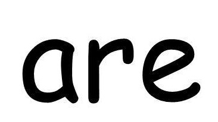
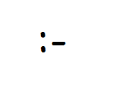

What is a Doodle Art?
Doodles are simple drawings that can have concrete representational meaning or may just be composed of random and abstract lines, generally without ever lifting the drawing device from the paper, in which case it is usually called a "scribble".
What type of Art is a Doodle Art?
A doodle is an unfocused drawing made while a person's attention is otherwise occupied. Doodles are simple drawings that can have concrete representational meaning or may just be abstract shapes. It's the easiest thing to do and easy on the common media, such as paper, pen and pencil.
 


Fun Facts Time...